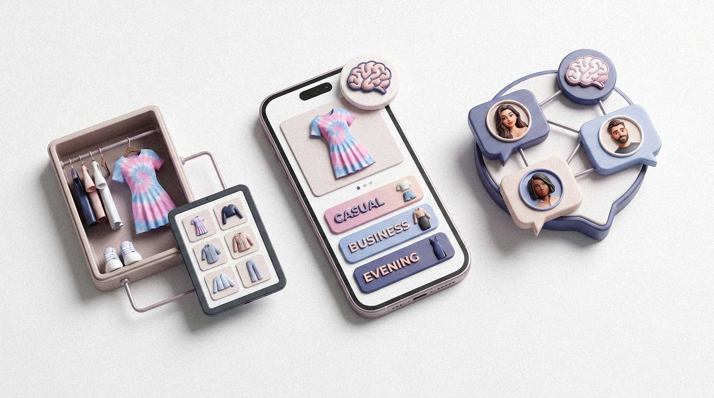
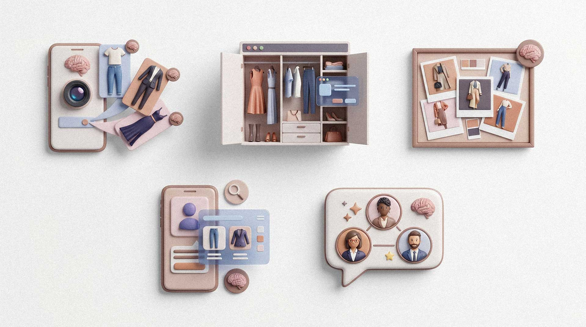

Casual
An everyday scenario for walking and city life.
The product turns a photo of a garment or outfit into three ready styling scenarios: casual, business, and evening. Around the generation flow, Stylo.You builds a digital wardrobe, an inspiration gallery, and a social layer with creator profiles.
An everyday scenario for walking and city life.
A polished look for the office and meetings.
A more expressive option for evenings and events.
A user can have a full wardrobe, saved references, and a clear desire to look better, yet choosing a specific combination still feels manual and tiring. Stylo.You turns that moment into a simple product flow: upload a photo, receive options, and save what works.
They show products, but rarely account for a person's taste, existing wardrobe, and specific occasion.
Users decide faster when they see a complete look, not only a text recommendation.
A photo becomes a set of options in one flow, without a long brief or manual styling work.
The gallery and creator profiles add references, subscriptions, and a reason to return.
The final product logic connects AI generation, the user's personal space, and social mechanics. This keeps Stylo.You from ending at a single result and brings the user back to wardrobe management, inspiration, and new experiments.
The user uploads a photo of a garment or outfit, adds preferences, and the system creates three styling concepts for different scenarios.
The answer is presented as visual layouts, so the user immediately understands combinations, mood, and use case.
Generated looks can be saved to the wardrobe, turning a one-time idea into a personal outfit collection.
The outfit feed shows community creations, helps users find inspiration, and shifts the focus from a tool to an ecosystem.
Creators receive a public presence, subscriptions, and social capital inside the product.
The product includes plans and generation limits, creating a monetization base without overloading the core experience.
A photo of a garment, person, or current outfit becomes the entry point for AI analysis.
The user adds preferences: season, occasion, mood, colors, or style direction.
The system generates three scenarios: casual, business, and evening, each with a visual output.
The best options go into the wardrobe or inspire other users through the gallery.
The technology section is based only on sources confirmed by the local materials and the public project build.
A personal AI ecosystem for style selection: from outfit generation to a social network of fashion creators.
The demo shows how Stylo.You turns one photo into ready outfit scenarios.
The video demonstrates fast summer outfit selection based on a user photo.

The demo shows how one photo becomes three looks: casual, business, and evening.

The overview confirms the fast selection of three summer looks from a user photo.
The product website confirms the positioning: a personal AI stylist, clothing upload, and ready looks in seconds.
The main product value is not just AI generation, but a complete experience: the user brings a photo, receives clear options, saves them to a wardrobe, and can continue through the gallery, creators, and new experiments.